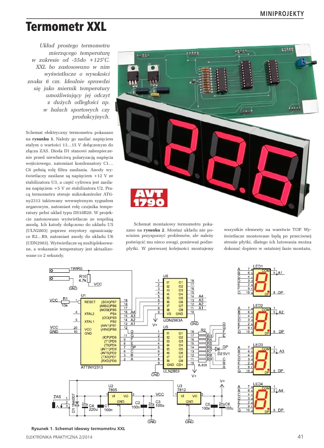
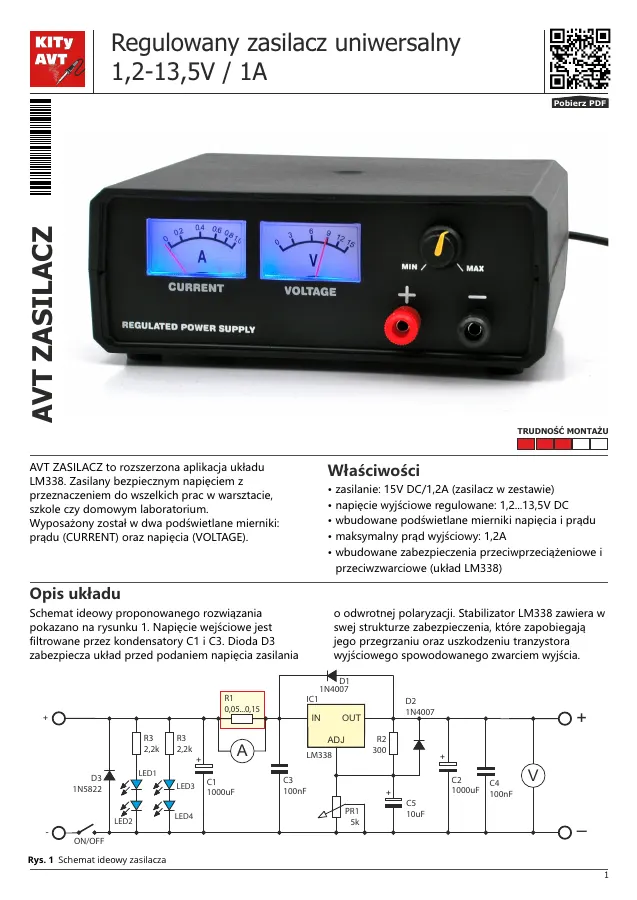
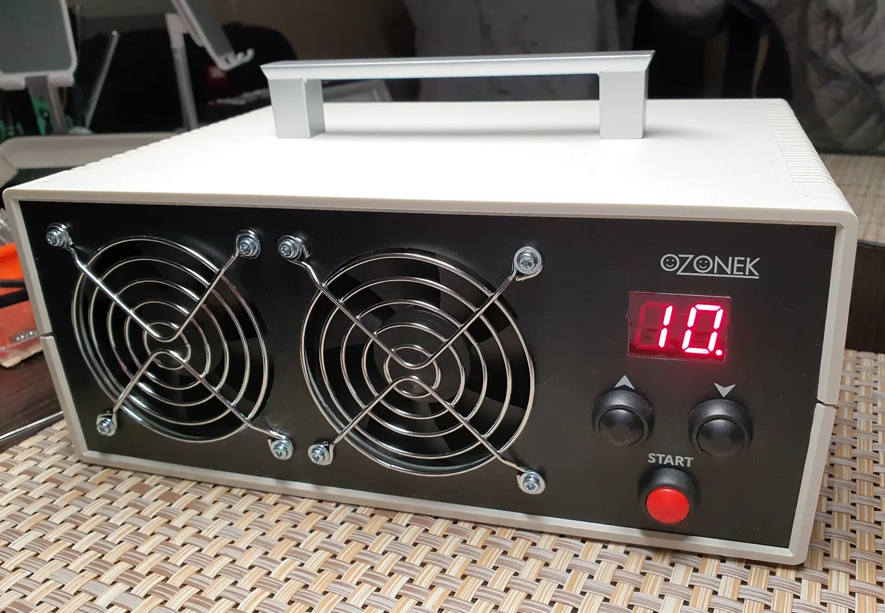

Elektronika Praktyczna · 10/2004 · AVT-594
Zdalnie sterowany potencjometr do aplikacji audio
Regulacja potencjometru z wykorzystaniem silnika elektrycznego i układu sterowania.
Elektronika, projektowanie PCB, prototypowanie i przygotowanie urządzeń do produkcji. Publikacje techniczne i autorskie konstrukcje.
PublikacjeAutorskie konstrukcjeOpracowania projektów prezentowane w „Elektronice Praktycznej”, „Elektronice dla Wszystkich” i materiałach AVT. Pełny katalog znajduje się na osobnej podstronie.
Regulacja potencjometru z wykorzystaniem silnika elektrycznego i układu sterowania.

Termometr z dużymi wyświetlaczami LED, mikrokontrolerem i cyfrowym czujnikiem temperatury.

Zegar elektroniczny z alarmem, układem RTC i automatyczną regulacją jasności.

Układ uczący się sygnałów pilota IR i sterujący przekaźnikiem.

Zasilacz oparty na stabilizatorze LM338, z miernikami napięcia i prądu.
Elektronika, integracja urządzeń, projektowanie obudów i wykonanie warsztatowe.

Autorskie urządzenia z elektronicznym sterowaniem czasowym. Projekt obejmował własną elektronikę i integrację podzespołów w obudowie.

Samodzielnie zaprojektowane podstawki pod lampy Nixie oraz obudowy ze sklejki. W zegarach wykorzystano gotowe moduły elektroniczne.

Autorska adaptacja samochodowego zestawu wskaźników do roli zegara dekoracyjnego. Własna elektronika, podświetlenie i drewniana obudowa.
Ponad 25 lat doświadczenia w elektronice, projektowaniu, prototypowaniu, dokumentacji i przygotowaniu produkcji. Własne zaplecze warsztatowe, cięcie laserowe i druk 3D.
Więcej o doświadczeniu →